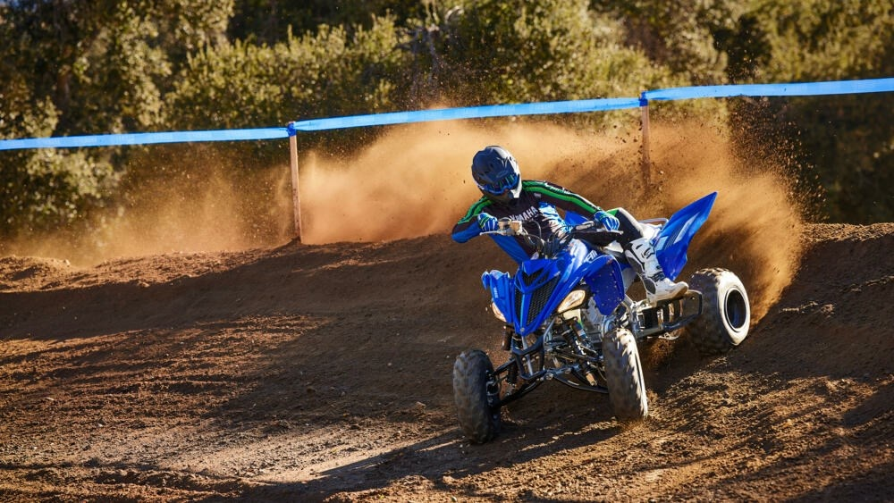
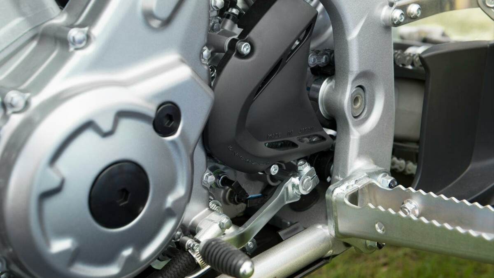
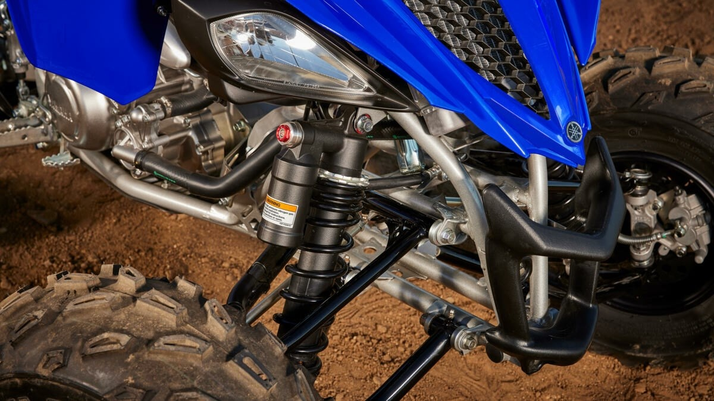
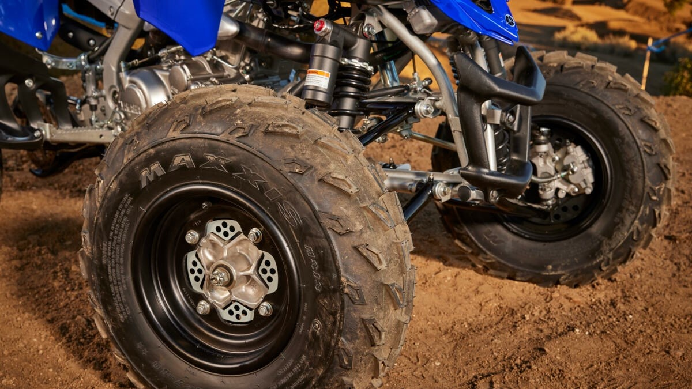
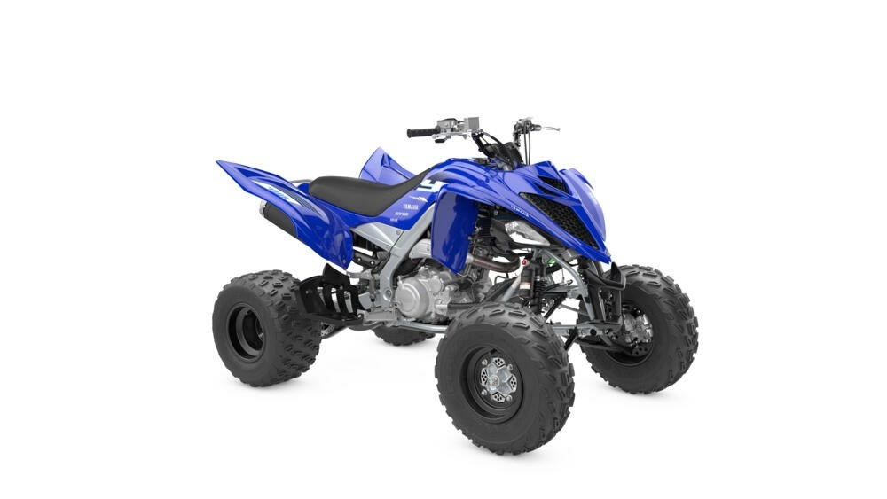
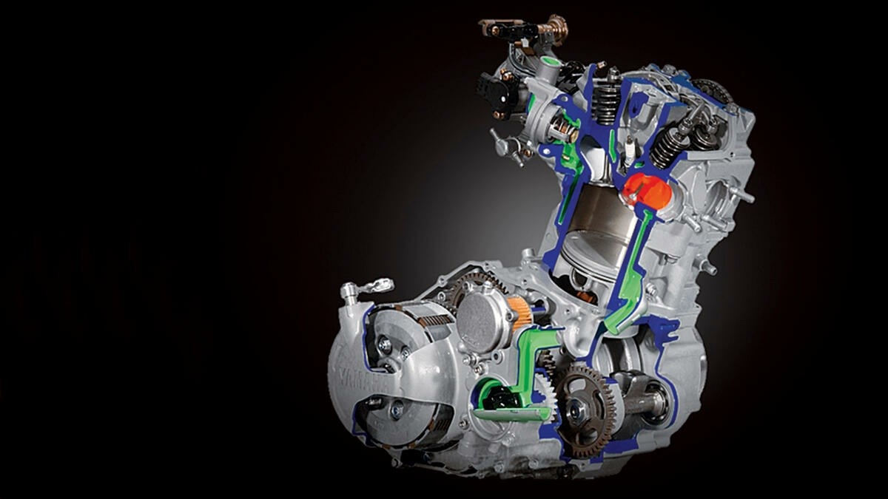
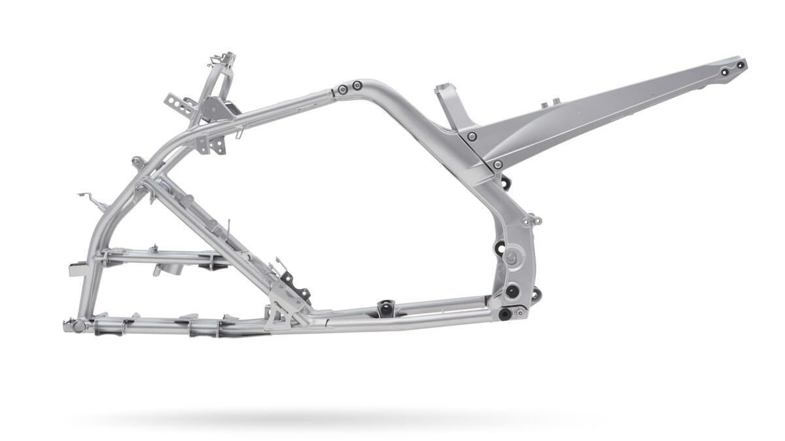

Quad sport · 686 cm³ · YFM700R
L'arme ultime sur piste. Le quad sport le plus iconique, conçu sans compromis pour ceux qui veulent gagner.
Une légende du catalogue Yamaha
Pour les amateurs de sensations, le Raptor 700 est « l'arme ultime sur piste, que vous pilotiez sur un circuit fermé ou sur des pistes rapides » (Yamaha). Sa puissance et son extrême maniabilité garantissent une montée d'adrénaline sur tous les terrains. Et une fois mordu, ce quad de compétition vous montrera ce que gagner signifie vraiment. Conçu sans compromis.
Ce qu'en dit la presse
— Le Monde du Quad
Moteur 686 cm³
Le moteur quatre-temps de 686 cm³ est doté de technologies qui dopent sa puissance pour des accélérations de folie. Profil de came spécial, cartographie d'injection optimisée pour la compétition, injection électronique multipoint 44 mm : la puissance est instantanée, et la faible consommation vous permet de rouler plus longtemps. Robustesse et fiabilité Yamaha en prime.

Châssis & suspensions
Le châssis hybride combine légèreté et résistance pour un contrôle total, à basse comme à haute vitesse. Amortisseurs à bonbonne réglables, débattement généreux, pneus avant Maxxis de 22 pouces spécialement développés pour le pilotage sportif : le Raptor avale les bosses et garde le cap, quel que soit le terrain.

Transmission compétition
Une boîte séquentielle à 5 rapports avec marche arrière, un embrayage précis et un alignement parfait du train arrière grâce au système de tension de chaîne par excentrique. Chaque passage de rapport est franc, chaque relance immédiate. Le Raptor a une réputation sans faille : plusieurs fois vainqueur du Dakar.

En bref
Au-delà des chiffres, voilà pourquoi le Raptor reste la référence du quad sport.
Le roi du quad sport
— Le Monde du Quad
Galerie



Ils l'ont essayé
Revue de presse
« Le Raptor 700… est une légende du catalogue Yamaha. Ce quad sportif sans rival s'est taillé une réputation. »
Lire l'essai Le Monde du Quad« Indétrônable sur le Dakar et domine les épreuves du championnat du monde des rallyes tout-terrain. »
Lire l'essai Le Monde du Quad« Elle reste une référence en matière d'enduro. »
Lire l'essai Le Monde du QuadPour les puristes
Questions fréquentes
Le Raptor 700 est équipé d'un monocylindre 4 temps de 686 cm³ à injection électronique multipoint, associé à une boîte séquentielle 5 rapports avec marche arrière.
Le Raptor 700 existe en versions homologuée et non homologuée. Renseignez-vous auprès de Jet 7 Bike à Cannes pour connaître les disponibilités et conditions d'usage.
Jet 7 Bike, concessionnaire Yamaha à Cannes, propose la découverte du Raptor 700. Réservez en ligne, réponse sous 24h.
Passez à l'action
Essayez le Raptor 700 à Cannes. Sans engagement, réponse sous 24h.